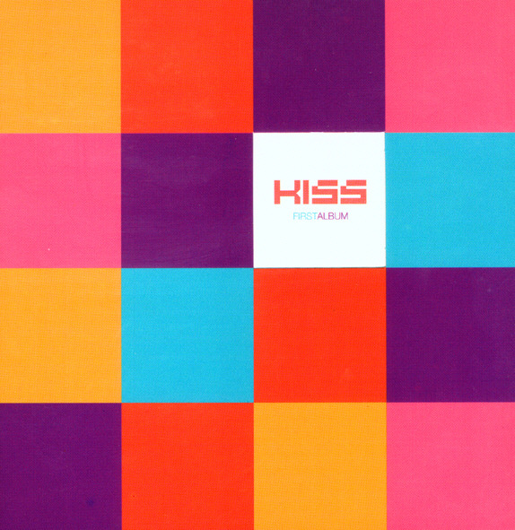

안녕하세요 라보엠입니다.
오늘은 2001년 발매된 키스의 첫번째 앨범에 수록된 여자이니까를 소개해드리겠습니다.
여자이니까 노래 MV
키스의 공식 뮤비에서는 신현준이 출연해 사고를 당해 눈을 잃은 여자에게 자신의 눈을 주고 떠나는 순정남을 연기했습니다. 여자는 그것도 모르고 자신을 떠난줄 안다는 내용입니다. 비슷한 내용의 영화도 있었죠 소지섭 한효주 주연의 오직 그대만입니다. 영화에서는 여자 주인공이 원래부터 눈이 안보였지만, 그녀를 위해 희생하는 남자의 모습이 비슷합니다.
오직 그대만 다시보기 | 키노라이츠 #리뷰 #평가
잘나가던 복서였지만 어두운 상처 때문에 마음을 굳게 닫아버린 철민. 시력을 잃어가고 있지만, 늘 밝고 씩씩한 정화. 좁은 주차박스에서 외로운 시간을 보내고 있던 철민에게 꽃 같은 그녀, 정
m.kinolights.com
여자이니까 가사
1.
도대체 알 수가 없어 남자들의 마음
원할 땐 언제고 다 주니 이제 떠난대
이런 적 처음이라고 너는 특별하다는
그 말을 믿었어 내겐 행복이었어
chr.
말을 하지 그랬어 내가 싫어졌다고
눈치가 없는 난 늘 보채기만 했어
너를 욕하면서도 많이 그리울 거야
사랑이 전부인 나는 여자이니까
2.
모든 걸 쉽게 다 주면 금방 싫증 내는 게
남자라 들었어 틀린 말 같진 않아
다시는 속지 않으리 마음먹어 보지만
또다시 사랑에 무너지는 게 여자야
chr.
말을 하지 그랬어 내가 싫어졌다고
눈치가 없는 난 늘 보채기만 했어
너를 욕하면서도 많이 그리울 거야
사랑이 전부인 나는 여자이니까
br.
사랑을 위해서라면 모든 다 할 수 있는
여자의 착한 본능을 이용하지는 말아줘
chr.
한 여자로 태어나 사랑받고 사는 게
이렇게 힘들고 어려울 줄 몰랐어
너를 욕하면서도 많이 그리울 거야
사랑이 전부인 나는 여자이니까
너를 욕하면서도 많이 그리울 거야
사랑이 전부인 나는 여자이니까
여자이니까 리메이크
벤 - 여자이니까
2021년 벤이 리메이크를 했습니다.
다비치 여자이니까
저는 2016년에 JTBC 슈가맨에서 다비치가 부른 버전을 좋아합니다.